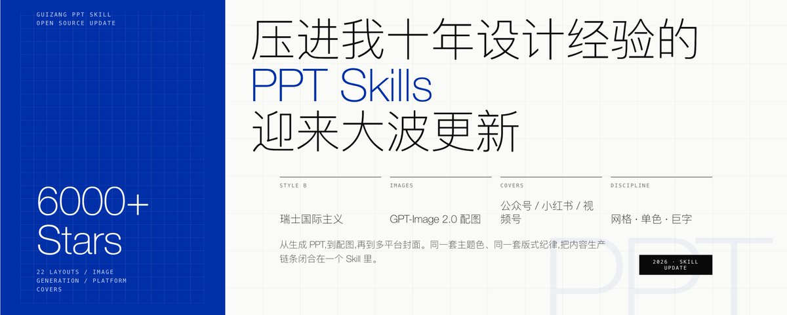
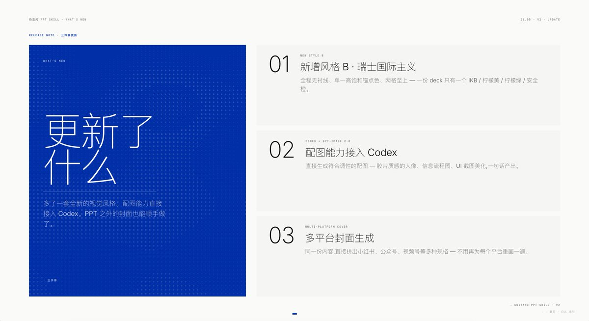
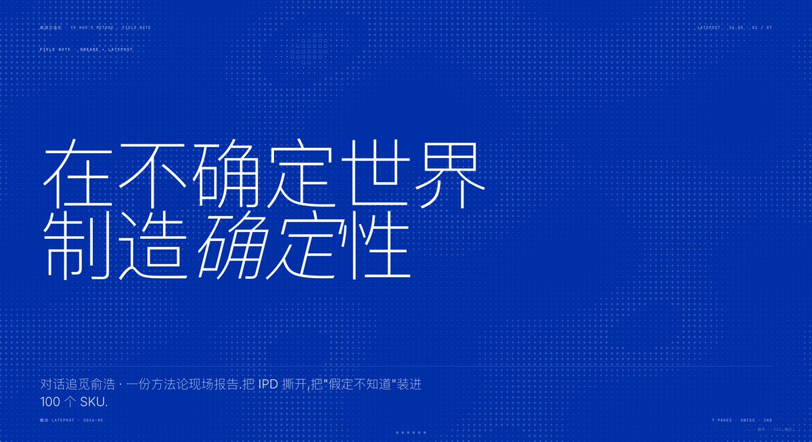
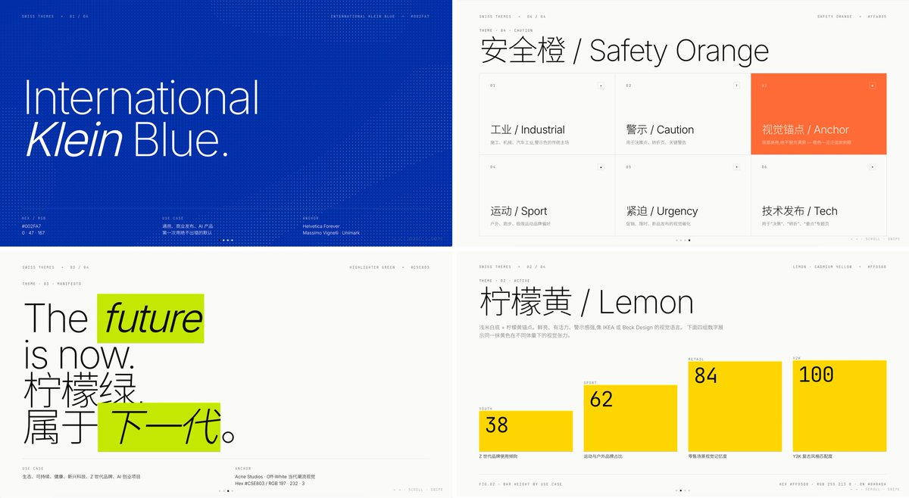
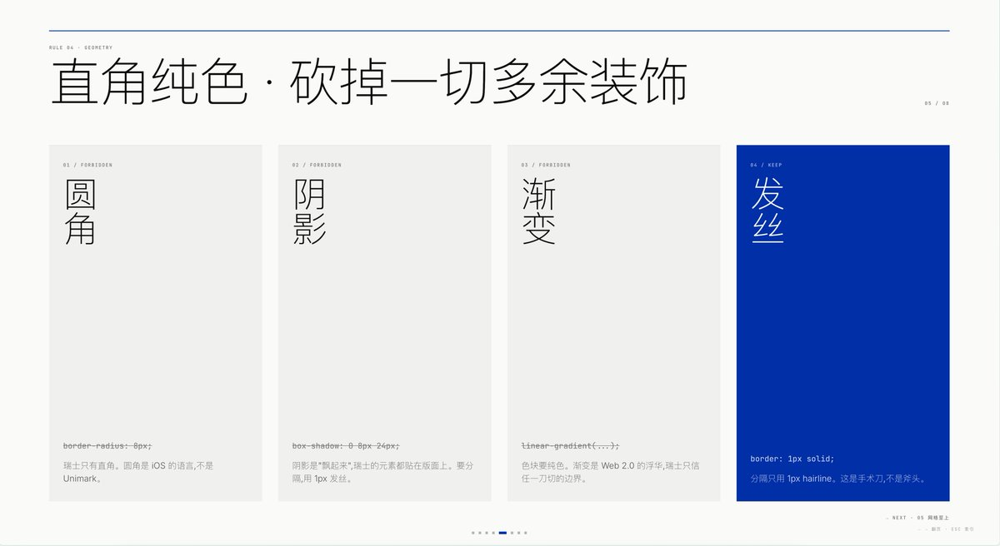
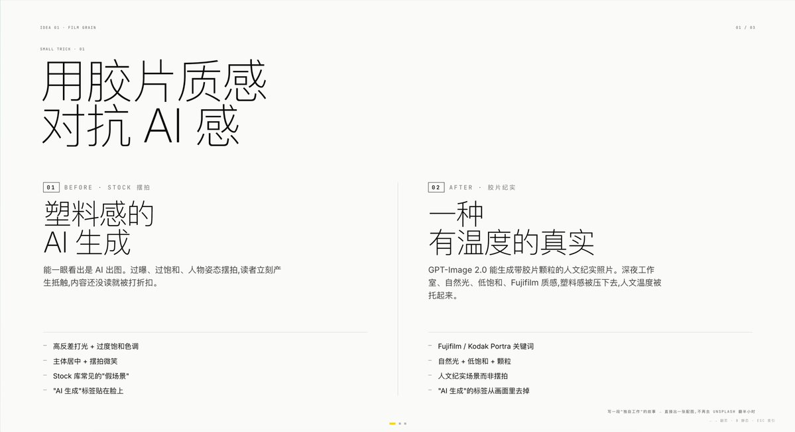
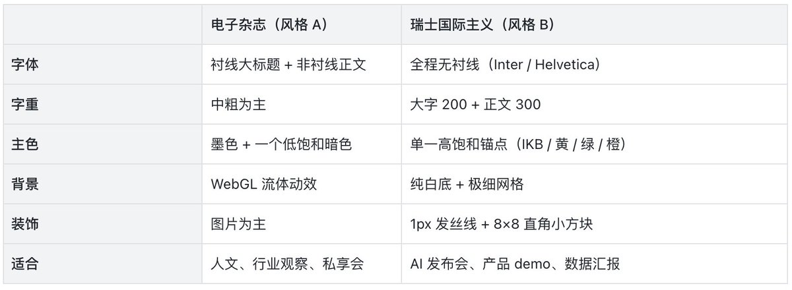

🎯 名人名言
01 / 07
"压进我十年设计经验的
PPT Skills
，迎来大波更新"
歸藏 · guizang.ai | GitHub 6000+ Star | 23 万观看

🔄 更新了什么
02 / 07
本次更新三件事

瑞士国际主义风格
— 全程无衬线、单一锚点色、网格至上
GPT-Image 2.0 配图
— 自动生成符合调性的配图，胶片质感
多平台封面生成
— 小红书 3:4、公众号 21:9、视频号横版
📐 六种核心版式
03 / 07
六种开箱即用的版式

Cover
— IKB底色 + 反白巨字
Statement
— 单句话占 9.6vw
KPI Tower
— 数据决定柱高
Loop Diagram
— 循环/飞轮结构
Duo Compare
— Before vs After
Closing
— 与封面色彩闭环
🎨 四套主题色
04 / 07
四套锚点色，不接受自定义 hex

克莱因蓝 IKB
— 通用 / 商业 / 默认推荐
柠檬黄
— 年轻 / 运动 / Y2K
柠檬绿
— 生态 / Z 世代
安全橙
— 警示 / 活力
单一锚点色是瑞士风的灵魂。
Less is more.
📏 设计纪律
05 / 07
七条设计纪律，一百年前就有了

①
单一锚点色
②
字号比 ≥ 8:1
③
大字 ExtraLight 200
④
直角纯色
⑤
16 列网格
⑥
无 WebGL
⑦
不接受自定义 hex
💡 巧妙设计
06 / 07
三个让 PPT 质感飞跃的小巧思

胶片质感对抗 AI 感
— GPT-Image 2.0 出图带 Fujifilm 质感，看不出塑料感
截图重做
— 把奇葩比例的 UI 截图按 16:10 重做，统一视觉
PPT 包裹 AI 图
— 单发 AI 图会被检测标记，放进模板再截图就安全了
✍️ 写在最后
07 / 07
人 x AI 协作做内容的完整链条

从写大纲、生成 PPT、配图、导出、到发布到不同平台。
以前要打开 5 个软件，现在在一个对话里能走完。
AI 只能做 70 分，这
30 分
来自把设计经验写进代码。